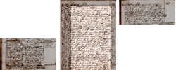
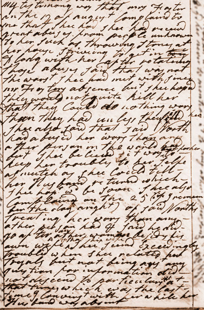

Martha Ballard's Diary
View Text
View No Frames version
Dec 23, 1789

December 23, 1789 (Wednesday)
- excerpt

Jump to...
Practice reading the Dec. 23 entry with the 'Magic Lens' (requires java)
The full Dec. 23 entry appears in Chapter 11 of Martha's Ballard's Story
See the Dec. 23 entry in Martha Ballard's Diary Online